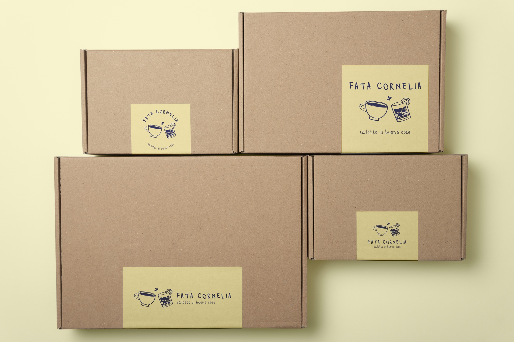
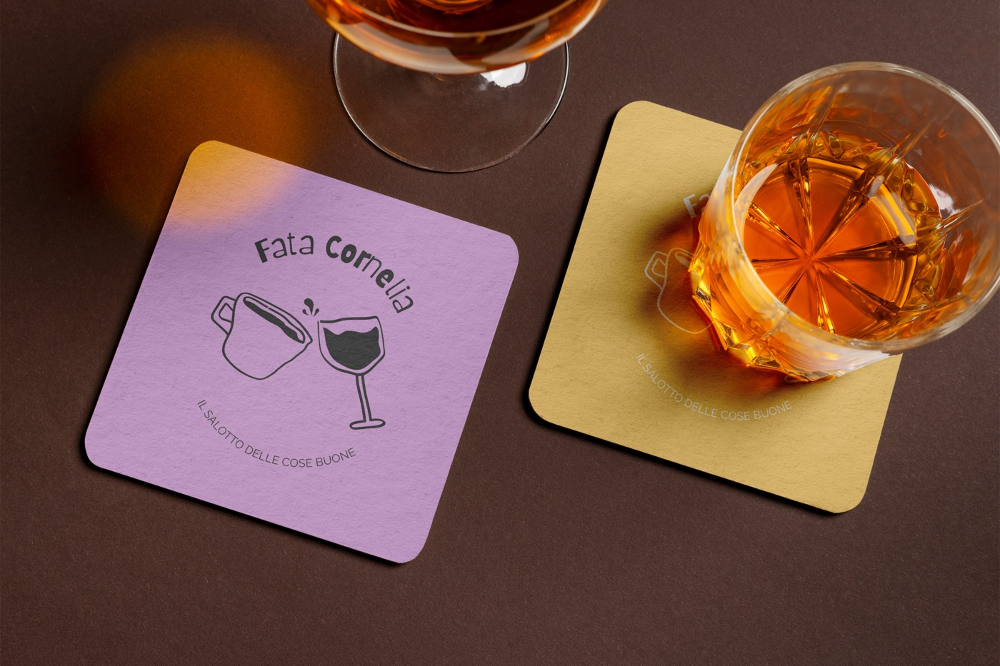
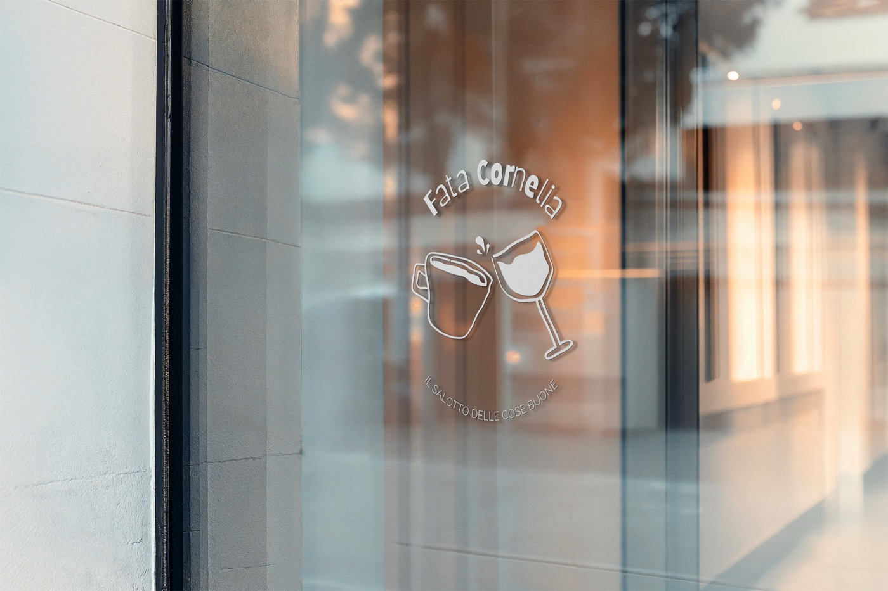

06//
Fata Cornelia
Logo for Fata Cornelia, a salotto di buone cose in Oristano: a coffee cup and a glass, raised together in a toast.
the logo
Two hand-drawn objects meet in a toast: a coffee cup and a glass with ice and a slice of lemon. Underneath, the name and the tagline salotto di buone cose.
hand-drawn lettering
The lettering was drawn by hand by the client, Federica, to give the brand a more authentic feel. The logo is built around her handwriting, so the drawings and the type speak with the same line.

versions & colour
A round badge, two square layouts and a horizontal version cover every use, from labels to signage. Navy on butter yellow keeps it warm and easy to recognise.
- butter yellow#fff0b9
- navy#1f2063

first drafts
Early versions tested the idea on coasters and on the shop window, with a wine glass in place of the tumbler and the tagline il salotto delle cose buone.


credits
Lettering by Federica, owner of Fata Cornelia. Logo design by Sara Seu.
Follow Fata Cornelia on Instagram: @fata_cornelia